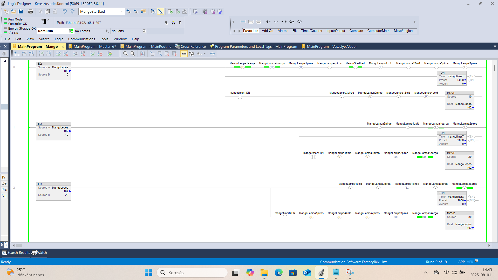
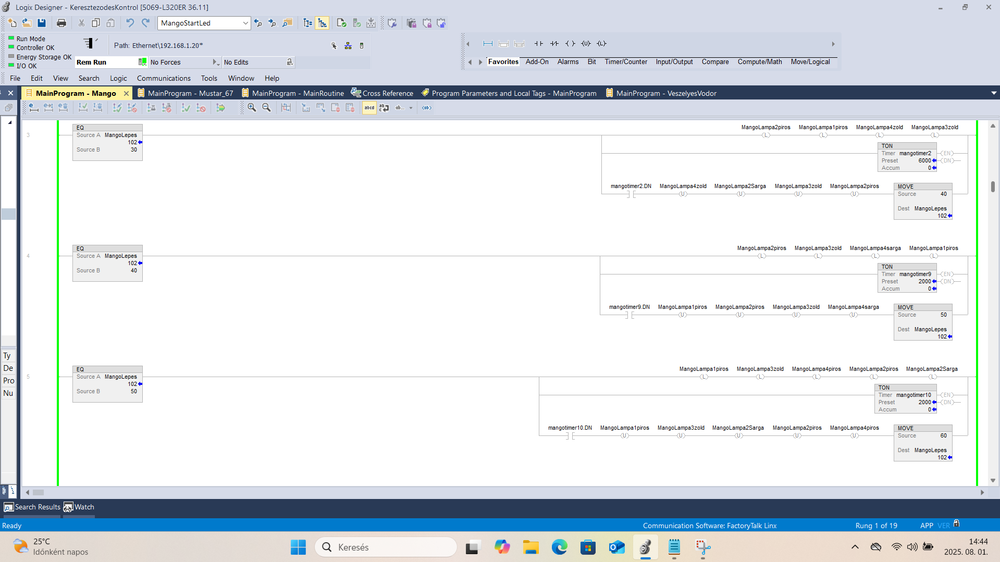
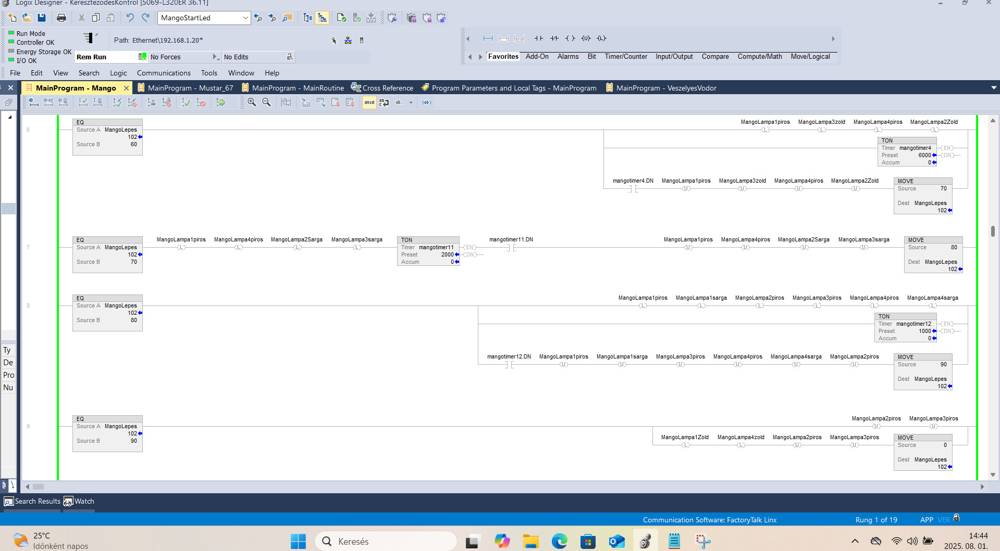
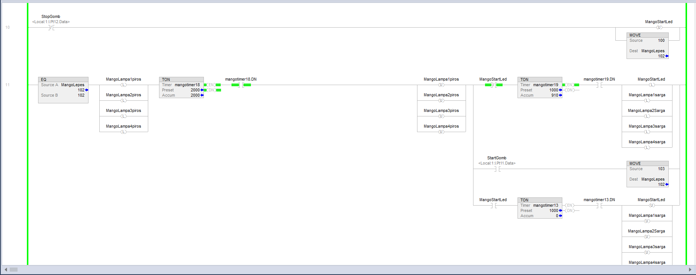
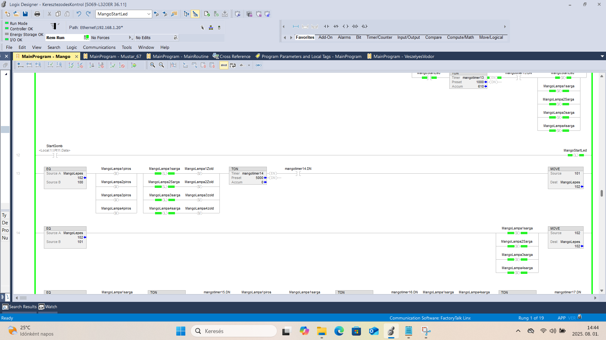
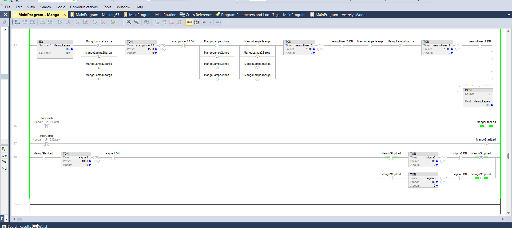

Útkereszteződés Forgalomirányító Rendszer
Feladat leírása:
A feladat egy négyirányú útkereszteződés közlekedési lámpáinak vezérlése. A programnak biztosítania kell a biztonságos áthaladást (megfelelő zöld, sárga, és piros fázisokkal, valamint biztonsági középállásokkal). A normál üzemen kívül a rendszer rendelkezik egy dedikált indítási (teszt/ürítő) fázissal és egy leállítási (sárga villogó) funkcióval is.
A rendszer bemenetei (kezelőszervek):
- 1 nyomógomb (StartGomb): A forgalomirányító ciklus elindítására.
- 1 nyomógomb (StopGomb): A rendszer leállítására és sárga villogó üzemmódba kapcsolására.
A rendszer kimenetei (végrehajtók/visszajelzők):
- 12 kimenet (Lámpák): 4 darab közlekedési lámpa (irányonként), mindegyiknél külön Piros, Sárga és Zöld jelzés.
- 2 visszajelző LED: A kezelőpulton a Start (MangoStartLed) és Stop (MangoStopLed) állapotok jelzésére.
Megvalósítás:
Studio 5000 / Logix Designer környezetben, LAD programozási nyelvben.






A vezérlés logikája és felépítése:
A feladat megoldása során egy szekvenciális állapotgépet (State Machine) valósítottam meg, amely a `MangoLepes` változó értékére támaszkodik:
- Lépéses szekvencia: A program lépésről lépésre (10, 20, 30 stb.) halad. Minden fázishoz egy dedikált bekapcsolás-késleltető időzítő (TON) és Latch/Unlatch utasításpár tartozik, amely biztosítja az adott lámpakombináció fenntartását.
- Indítási (Start) ciklus: A gomb megnyomásakor a rendszer nem enged rá azonnal zöld jelzést a forgalomra. Először egy ürítő fázis fut le, ahol minden irány pirosat kap, megelőzve a baleseteket.
- Leállítási (Stop) ciklus: Leállításkor a program azonnal megszakítja a normál üzemet, és egy sárga villogó fázisba (`MangoLepes = 100`) áll át, figyelmeztetve a közlekedőket a megváltozott forgalmi rendre.
- Biztonsági középállások: A zöldről zöldre váltás (különböző irányok között) sosem közvetlen. Minden irányváltás között egy "mindenki piros" biztonsági idősáv található.